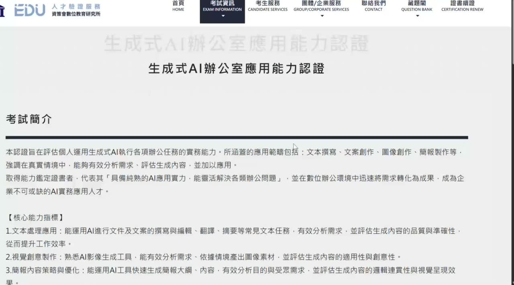
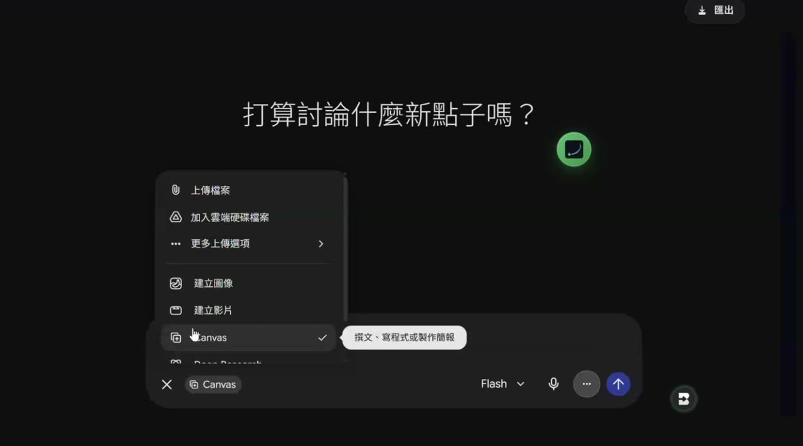
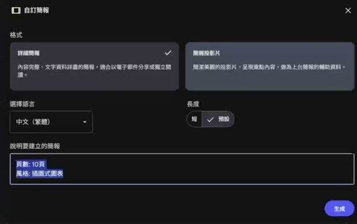
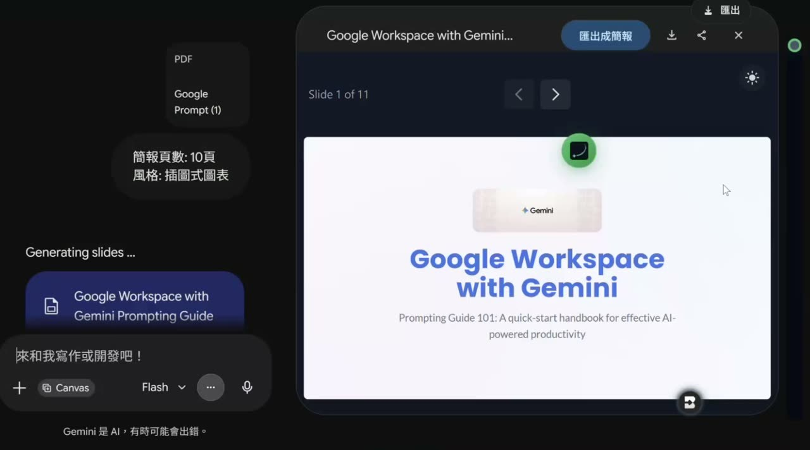
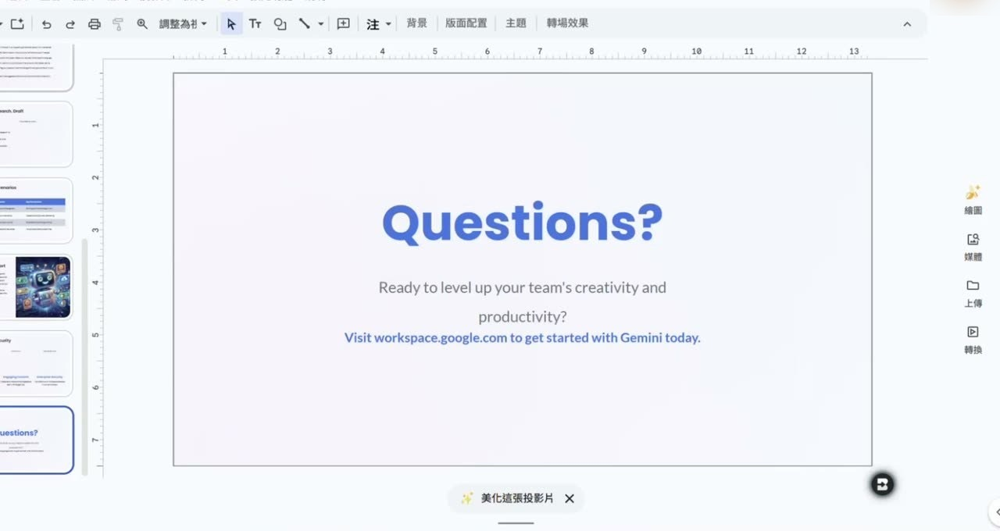

0. 課程資訊與教材
| 課程名稱 | 重新定義企業 AI 實戰力——資策會「生成式 AI 辦公室應用能力認證」深度解析 |
|---|---|
| 直播日期 | 2026/06/04（四）晚間，本段錄影全長 43 分 4 秒 |
| 講師 | 益師傅（楊俊益・ECF 生成式AI應用電台） |
| 本堂主題 | 這張證照值不值得考、實際考什麼、考前要準備什麼、考場上怎麼把成果交出去 |
| 課程定位 | ECF 訂閱制的證照解析場，不是工具教學場。工具怎麼用在別堂講過，這堂講的是「考試這個限制條件」怎麼應付 |
| 要先準備 | Gemini、NotebookLM、ChatGPT、Perplexity、Canva 的帳號（考場不提供任何 AI 工具，全部要自備、自行登入） |
📁 課堂錄影與教材
本堂是 ECF 訂閱制的付費課程，原始錄影與老師自製的解析簡報都沒有公開，這一頁只是課堂內容的文字整理。要看原片請從 ECF 訂閱制的課程資料夾進去。
| 課堂上用到的東西 | 課堂上拿來做什麼 |
|---|---|
| 資策會 iEDU 人才驗證服務官網 | 對照「考試簡介」與「核心能力指標」原文，說明這張證照的官方定義（公開網站，本頁有截圖） |
| 老師自製解析簡報（PDF） | 認證光譜、五大核心場景、術科／學科配分、交件規格檢查表、八大情境題（未公開，本頁不放原圖，內容改寫成表格與手繪示意圖） |
Google Workspace with Gemini Prompting Guide.pdf | 現場示範用的素材檔，拿它去 NotebookLM 與 Gemini Canvas 各生一份十頁簡報 |
🎬 這 43 分鐘怎麼走
單段錄影，43 分 4 秒。前 6 分鐘是「要不要考」的心路歷程，6–14 分是考什麼與怎麼配分，14–20 分是考前準備，20–33 分是簡報實作與交件，33–42 分是八大情境題與報名資訊。本頁的章節就照這個順序排。
1. 一張圖看懂這堂
整堂的主線只有一條：這張證照從頭到尾都在測「限制條件下的產出」。所以準備的方式不是背知識，是把工具、帳號、提示詞、交件格式全部在考前先排好。
2. 他自己都說證明不了能力，為什麼還是要考
開場前六分鐘全部在講這件事。這一段沒有任何操作示範，但它決定你要不要看完後面。
他很直接地承認，自己以前對這類證照的態度是「不屑」：平常天天在用的東西，為什麼還需要一張紙來驗證。改變他想法的是同業的一句提醒——經濟部 iPAS 那張證照對承接政府案子有幫助。他先去考了 iPAS AI 應用規劃師初級，才回頭考資策會這張辦公室應用能力認證。
真正的理由不是能力，是資格條文
他把最現實的一段講得很清楚：在很多公部門、財團法人、執行單位，承辦人就算認識你、也肯定你的能力，他改不了公文上的資格條文。條文寫要有這張證照，你沒有，他想找你也沒辦法找。就像求職時對方要求乙級、甲級技術士，你功夫再好，沒有那張紙連面談的機會都沒有。
誰會被要求考
- 科技大學（尤其私立）教師——他說以前是「鼓勵」，今年變成「要求」，暑假還得為這件事準備，他自己最近也要去幾間大學做教師研習談這張證照。
- 要承接政府／法人標案的人——資格條文寫死了就是寫死了。
- 不需要的人——已經有穩定邀約、不接標案的講師，他明說「其實可以不用考」。
3. 這張證照在考什麼：辦公室的實戰力，不是工程師的考卷
他先開官網對照原文，再用自己做的解析簡報把「這張證照想解決什麼問題」講一次。

他用三欄講清楚這張證照要解決什麼
他自製的第一張投影片叫「一張正在成形的『企業 AI 實務能力』衡量尺」，用痛點／定位／核心三欄定位這張證照。以下是三欄的內容：
| 欄位 | 他寫的內容 |
|---|---|
| 痛點 | 市場充斥大量「會用 AI」的課程，但企業缺乏衡量員工真實上線執行的標準 |
| 定位 | 非工程與學術導向，完全聚焦於辦公室情境的實務應用 |
| 核心 | 測試在真實辦公室的限制條件下，將 AI 轉化為可靠生產工具的能力 |
看中間那一欄就夠了：它量的不是你會不會用 AI，是你能不能在辦公室的限制裡把 AI 當成可靠的生產工具。這也是他建議「要考就先搞懂它在量什麼」的理由。［06:59］
認證光譜：它站在哪一格
他用一張二維光譜圖說明這張證照的位置。橫軸是「工程開發 ↔ 實務應用」，縱軸是「理論知識 ↔ 辦公室商業」。傳統 IT 證照落在工程開發那一側，資策會這張落在辦公室商業 × 實務應用的角落。他在圖上直接寫了一句話：「這不是工程師的考卷，而是真實辦公室的生存測試。」
考試的唯一目的：在限制條件下產出成果
整堂觀念密度最高的一張投影片，他把這張證照要量的東西寫成一條公式。注意「格式限制」與「時間壓力」是相乘不是相加——這兩項一起放大，才是辦公室的真實狀況。
涵蓋哪些場景
他列了企業每天都在發生的五大核心場景，術科八題就是從這五格裡長出來的：
- 文字溝通與文件產出——信件、公告、紀錄。
- 跨部門協作整合——把甲部門做的文案，交給乙部門做成視覺或簡報。
- 簡報與視覺內容——考最多題的一塊。
- 對內對外溝通——客訴回覆、活動說明。
- 行銷與品牌素材——Logo、標語、菜單視覺。
它怎麼出題
| 出題特徵 | 對你的意義 |
|---|---|
| 題庫約 1000 題，隨機抽 40 題 | 鄰座的題目跟你不一樣，看別人沒有用 |
| 不考複選，但選項很接近 | 常見句型是「下列何者不是」，看漏一個字就錯 |
| 情境式敘述，答案藏在題幹 | 要讀懂語意與用詞，這就是他說的「像在考國文」 |
| 多位老師出題，關聯性難審核 | 不會的先做標記，後面的題目常常會把答案講出來 |
4. 術科與學科怎麼分工：先測做事，再測觀念
這一章把兩張同一主題的投影片併在一起看（他在 12 分與 32 分各講了一次）。
他在投影片上把兩者畫成兩個對照的圓：術科是執行力 100%、理論 0%；學科剛好倒過來。這張圖說明了為什麼他整堂 80% 的時間都在講術科——學科靠背，術科靠準備。［13:01］
| 術科（實作） | 學科（選擇題） | |
|---|---|---|
| 題數／時間 | 8 題完整情境題／90 分鐘 | 40 題／30 分鐘 |
| 核心要求 | 實際產出 AI 生成的成果並上傳 | 常識、觀念、流程、風險與應用理解 |
| 能力配比 | 執行力 100%、理論 0% | 執行力 0%、理論 100% |
| 他的建議 | 照本頁第 5–8 章準備，一定要事先演練過一輪 | 刷題就好，題目本身不難，重點是讀懂語意 |
5. 考前十分鐘決勝負：帳號登好、提示詞先藏進 Gem
這一段沒有畫面可看，但他自己說「這個很重要」的次數最多。整章都是可以照著做的準備動作。
他在解析簡報上寫了一行關鍵設定：考場「不提供」任何 AI 工具，考生必須使用自己平常慣用的網頁版 AI 工具、自行登入帳號完成產出。也就是說，工具是你自己的，帳號是你自己的，登不進去就等於沒工具。
考前十分鐘可以做的事
- 提早到考場。考前 10 分鐘監考允許你做登入動作，包含拿手機出來做驗證——很多平台的登入必須手機收驗證碼。
- 把你要用的平台寫成一張清單再去，不要到現場才想。他建議的清單是 Gemini、NotebookLM、ChatGPT、Perplexity、Canva。
- 逐一登入，全部開成分頁掛著。他的原則是「多開幾個備著」，因為考場上換工具的時間成本很高。
- Chrome 一定要啟用同步。不同步的話，你以前存的快捷指令、書籤連結全部不見，臨場找不到會很慌。
- 把常用的提示詞事先放進 Gemini 的 Gem（ChatGPT 的 Project 也可以）：圖像生成的、文案整理的、簡報生成的各準備一份。
6. 術科主戰場：十頁簡報要用哪一套生
術科八題裡簡報佔最多題，所以這一章是全堂密度最高的實作段。他現場開了三條路做比較。
三條路，他的排序
| 工具 | 他的評價與用法 |
|---|---|
| Gemini 的 Canvas | 主攻。速度快、可以直接用描述生成不一定要上傳檔案，模型選 Flash 就好。畫面出現左右分割就代表它在跑簡報。 |
| NotebookLM 自訂簡報 | 備援，先讓它跑著。品質好但慢，十幾分鐘跑不出來是常態，而且需要來源檔案。 |
| Canva | 可用但要自己評估。好處是產出後可以改字；他認為提示詞下得夠精準的話其實不用改。 |
他的實際打法是兩邊併跑：先把題目素材丟進 NotebookLM 讓它慢慢生，馬上切到 Gemini Canvas 做同一件事，哪邊先出來就用哪邊。


他在設定框裡逐字打的就是這兩行，格式很固定，冒號後面記得空一格：
三個現場最常卡住的狀況
- NotebookLM 轉十幾分鐘都沒出來——按 F5 重新整理，很多時候它其實已經做好了，只是頁面沒更新。
- 它跑出互動式網頁（HTML）而不是簡報——這個交不出去。加一句：「說好的簡報呢？」它會把網頁改回簡報，速度很快。
- 該畫圖卻不畫——同一招換成「說好的圖呢？」。他說這句話他用很久了，因為直接講「給我簡報／請畫圖」，AI 會當成要做一份全新的，「說好的⋯呢」才會讓它回頭執行原本那件事。
圖真的還是跑不出來時，他給了兩條替代路線：改用 ChatGPT 的影像生成，或回到 NotebookLM 的「資訊圖表」——把題目給的文案加進來源，再用題目裡那段提示詞自訂產生圖表或海報。
7. 十一頁不能交：規格即現實
簡報生出來只是一半。這一章講的是他認為最容易被忽略、卻真的會扣分的那一半。


兩種把十一頁變成十頁的解法
- 走 Google Slides：在 Gemini 的匯出選單按「開啟簡報」，它會跟 Google Slides 串在一起，把最後一頁（圖像來源頁）刪掉，再另存成 PDF 交出去。
- 走列印（他自己的習慣）：先把簡報下載成 PDF，在檔案上按滑鼠右鍵選「開啟檔案」用 Edge 開，按列印，頁面範圍填 1 到 10，儲存成新的 PDF。他說 Edge 的列印介面比 Chrome 單純，臨場比較不會出錯。
交件規格檢查表
他在投影片上把交件規格整理成一張「Corporate Reality Checklist」，並寫了一句話當註解：在辦公室裡，最好的 AI 產出，是老闆和客戶「打得開」的檔案。以下是那張表的內容。［33:31］
| 交件項目 | 規格 |
|---|---|
| 文字與簡報 | 必須列印／轉存成 PDF |
| 圖像與海報 | 必須存成 JPG 或 PNG |
| 檔案大小 | 單一檔案 10MB 以下，嚴格限制 |
| 檔名 | 依題號精準命名（例如第二題就是 2.pdf） |
| 最後一步 | 回到系統確認「成功上傳」，沒上傳成功等於沒做 |
8. 八大情境題怎麼拆：提示詞就寫在題目裡
最後一段他把術科八題逐題過一次，講的都是同一件事：題目已經把提示詞寫好了，你的工作是選對工具、把它貼進去。
| 情境題 | 他建議的做法 |
|---|---|
| 業務會議簡報生成 | 題目會給一份會議紀錄摘要 PDF。用 Gemini Canvas 或 NotebookLM 自訂簡報，提示詞直接抄題目的 |
| 公司活動簡報 季度營運策略跨部門簡報 | 如果題目只給文字敘述、沒有檔案，NotebookLM 會很麻煩（沒有來源）；用 Gemini Canvas，它可以純靠描述生成 |
| 產品 Logo 設計與生成 咖啡廳春季發表菜單視覺圖 | 題目會描述位置、色調、產品類型，那整段就是提示詞。用 Gemini 的 Nano Banana 圖像生成或 ChatGPT 生圖 |
| 客訴處理回覆郵件 | 先請 AI 把題目的提示詞改寫成信件回覆的形式，再把客訴內容貼進去；最後存成文字檔或 PDF 上傳 |
| 獲獎感言撰寫 | 題目會指定語氣，記得在提示詞裡明講「請用什麼樣的語氣」，其餘照抄題目 |
| 3 個新產品行銷標語生成 | 它說三個就給三個。他強調不要多也不要少 |
客訴回覆信的固定句型
他示範的寫法是先下這一句，再用 Shift＋Enter 換行，把題目給的客訴內容整段貼在後面：
9. 這堂課真正在教的事
一、證照的價值是資格，不是能力
他從頭到尾沒有說這張證照能證明你的 AI 實力——他說的是相反的話。但他仍然建議去考，因為在公部門與法人的世界裡，資格條文改不了，承辦人再怎麼認識你也沒用。把它當門票看，你就不會對它有不切實際的期待，也不會因為「這沒用」而錯過機會。
二、考的是限制，不是知識
90 分鐘 8 題、10 頁、10MB、指定副檔名、指定檔名。這些數字加起來才是這張證照真正在量的東西：在真實辦公室的限制條件下，你能不能穩定地把成果交出去。這也解釋了為什麼他整堂只花了兩分鐘講學科，其餘全部在講怎麼把檔案生出來、改成規格、上傳成功。
三、準備動作決定了考場上的九成
帳號有沒有登入、Chrome 有沒有同步、提示詞有沒有先放進 Gem、常用平台有沒有全部開著——這些事在考場上做都來不及。他花了整整六分鐘講考前十分鐘要做什麼，比講任何一個工具都久，這個比重本身就是答案。
四、每一種產出都要有第二條路
NotebookLM 卡住有 F5，簡報跑成網頁有「說好的簡報呢」，Gemini 生圖不穩有 ChatGPT 和資訊圖表，Arena 停用了就換工具。他真正在教的不是某個平台怎麼按，而是永遠準備好備援——因為考試不會聽你解釋網路有問題。
10. 老師金句
11. 資料來源與整理說明
| 來源 | 2026/06/04 ECF 訂閱制課堂錄影單段，全長 43 分 4 秒；本堂沒有另外發放教材檔 |
|---|---|
| 整理方式 | 全程本機處理：先把 Teams 錄影裁成只剩畫面分享的內容區，再擷取 47 張關鍵畫面、產生 415 段逐字稿，最後依逐字稿手寫章節目錄。本頁只用了其中 5 張截圖，其餘資訊改寫成表格、步驟與手繪示意圖 |
| 時間戳 | 章節標題與引文後方的［mm:ss］對應錄影播放器時間 |
| 整理 | 竹貞（Tarshar 的逐幀筆記專員） |
已知限制，請先看過再引用
- 逐字稿是機器產生的，人名與工具名會聽錯。可確定的錯字（「iPath」→ iPAS、「伊師傅／易師傅／義師傅／醫師傅」→ 益師傅、「情報將」→ 請幫我將⋯⋯共 6 類、40 餘處）已修正；不確定的一律保留原樣，沒有猜測補詞。
- 老師口中的「券／卷／圈」是 Gemini 的 Gem，「卻 GBT／缺 GPT／Chain GPT」是 ChatGPT，「深層思愛」是生成式 AI，「Nano Blana」是 Nano Banana。本頁正文改寫成正確寫法，金句照原話保留，方便你對照錄影。
- 錄影末段有語音辨識產生的重複幻覺（靜音時段被辨識成無意義音節），整理時已整段捨棄，不會出現在本頁。
- 逐字稿中出現的學員暱稱、姓名與提問者稱呼，本頁與逐幀素材一律隱去，改成「學員」。
- 課堂截圖只有兩種：公開網站，以及 AI 工具本身的操作畫面。老師自製的解析簡報屬於付費課程教材，本頁一張原圖都沒有用，簡報上的資訊全部改寫成表格與手繪示意圖。原始錄影是線上會議的畫面分享，含與會者資訊與個人桌面元素；本頁的每一張圖都已先裁成只剩分享內容區。整幀是會議介面、視窗切換清單、個人檔案清單或個人化推薦的畫面，一張都沒有選用。
- 考試題數、時間、費用、報名優惠與考試順序都以資策會官網與准考證公告為準；本頁只是課堂內容的整理，錄影中他自己也有幾處說「有點忘記了」。
- 引用到作業、貼文或簡報之前，請對照錄影原始段落再確認一次。